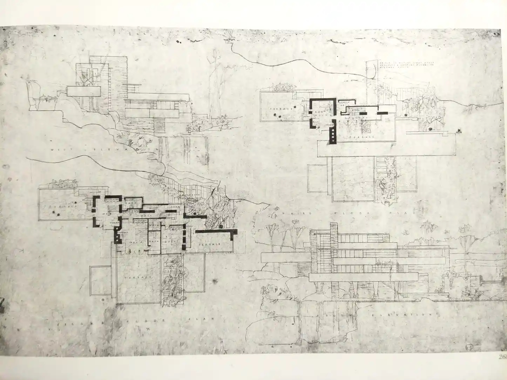
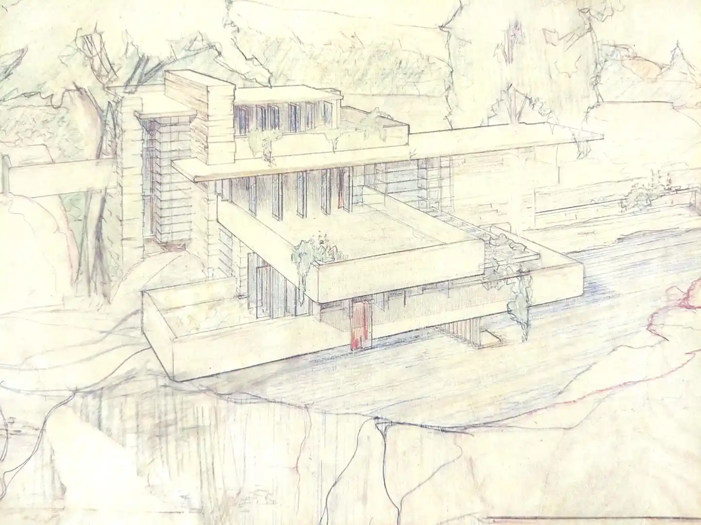

Block-out of Frank Lloyd Wright's Fallingwater house
 Yukio Futagawa. Frank Lloyd Wright Monograph 1924-1936. (Tokyo: A.D.A. EDITA Tokyo Co., Ltd., 1985). 165.
 Yukio Futagawa. Frank Lloyd Wright Preliminary Studies 1933-1959. (Tokyo: A.D.A. EDITA Tokyo Co., Ltd., 1987). 32.